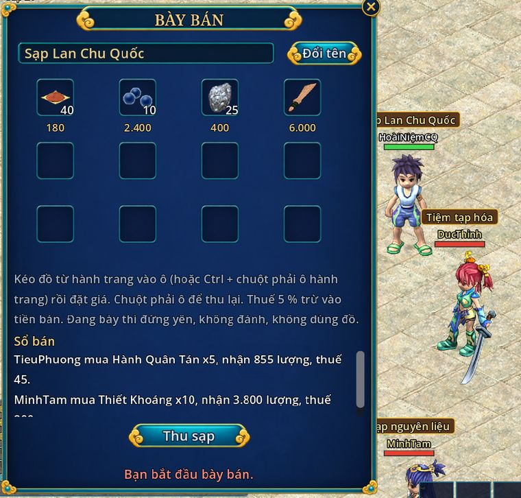

Bày sạp ở Chu Quốc
- Mở từ
- Cấp 20
- Ở đâu
- Khu sạp trong thành Chu
- Sạp có
- 12 ô hàng
- Tốn gì
- Thuế 5 % tiền bán

- Tới khu sạp trong thành Chu, đứng cách sạp khác hơn 2 ô.
- Dùng kĩ năng cơ bản Bày Bán (Alt+R, tab Kĩ năng cơ bản, kéo ra ô phím được).
- Kéo đồ từ hành trang vào ô sạp (hoặc Ctrl + chuột phải ô hành trang), đặt giá mỗi cái.
- Đứng chờ. Mỗi lần có người mua, khung chat báo ai mua, bạn nhận bao nhiêu sau thuế.
- Giá mỗi cái từ 1 tới 200.000.000 lượng. Đồ chồng thì người mua mua lẻ được. Chuột phải ô sạp để thu về.
- Không bày được: đồ khoá, đồ phong ấn, set sư môn, đồ không cho giao dịch, bảo thú.
- Đang bày thì đứng yên: không đi, không đánh, không dùng đồ, không giao dịch.
- Sạp tự đóng khi Thu sạp, đổi bản đồ, bị dịch chuyển, trọng thương, thoát game hay mất mạng: không bán hộ khi bạn đã thoát.
- Tên sạp mặc định "Tiệm tạp hóa", đổi được, tối đa 20 kí tự. Sổ bán giữ 30 dòng gần nhất.